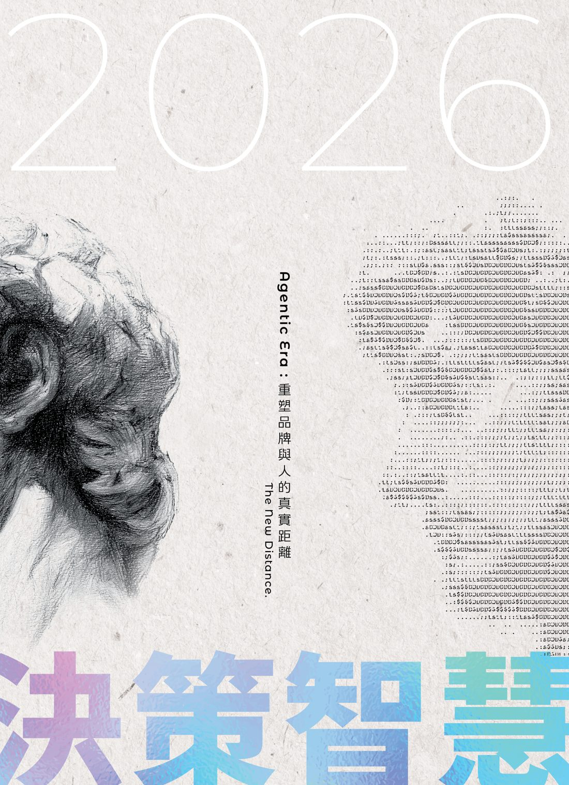
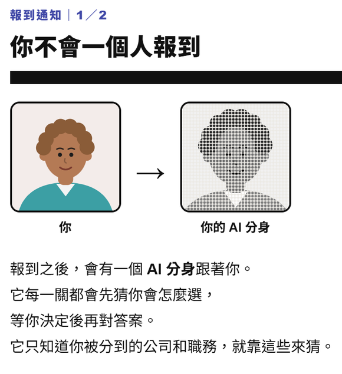
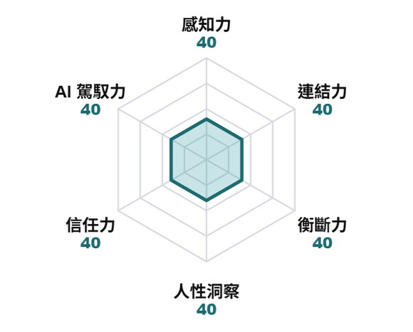

決策智慧 2026｜Vibe Coding 作品介紹
降落在電通，
讀懂《決策智慧》
各 BU 的真實情境，都在這本書裡。
翻開它，換個視角走一次。
一場 2–3 分鐘的職涯遊戲，
帶你走進 22 篇文章。

發想初衷｜回應這場比賽的三個目的
文字太多，我們習慣讓 AI 摘要；
讀得很快，卻很少真的吸收。
落地
鼓勵 AI 實作
我用 Claude Code，從一個想法做到能玩的網站。
每一段討論、每一次修正都記錄下來，別人看了也能照著做。
好讀
提升閱讀體驗
不做閱讀器，也不做摘要。
先讓人在處境裡被一句話打到，再帶他讀原文，才吸收得了。
舞台
AI 人才與文化
想像力，是你的超能力。
一個電通人，不用設限自己做不到；只要有想法，AI 幫你做成完整作品。
讀完這本書，我發現
同一本書裡，作者們其實站在不同邊
「把最昂貴的試錯，留在虛擬世界完成。」
陳介立等〈People Model〉
人可以
被模擬嗎？
「AI 很懂邏輯，但人，從不只靠邏輯活著。」
周麗君〈真實的力量〉
「AI 不只提升內容產製效率，更能串聯人才、創意與技術」
Trent Agnew〈超越效率〉
AI 量產，
放大或稀釋？
「品牌很可能因為 AI 的規模化生產，而逐漸滑向市場平均值。」
潘其偉〈拒絕同質化 AI Slop〉
「Learning by doing. 沒有完美的計畫 只有不斷學習的行動」
唐心慧〈AI for Growth〉
先做再說，
還是先顧文化？
「AI 導入不是軍備採購競賽 而是以人為本的文化轉型」
王馥蓓、周允玉〈文化暗流〉
這些拉扯沒有標準答案，它們就是我們每天在工作裡遇到的處境。
所以我把它做成遊戲：讓你站上一個職務，親手做一次決定。
作品是什麼
一場 2–3 分鐘的職涯遊戲
01
翻開書
被吸進《決策智慧》
02
被分發
集團裡的一間公司、一個職務
03
5 個決定
AI 分身陪你，但由你決定
04
結局
升上老闆、留下來，或離開
05
讀原文
被打到的那一篇，直接讀
12 個品牌・27 種職務
依集團人數占比分發
每個難題都出自原文
71 句引文逐字核對原刊
重玩就會遇到不同篇章
22 篇文章都有入口
01｜報到
翻開書，
走入另角落的電通
- 首頁就是刊物封面，翻開後被吸進書裡，落進 Dentsu 的網絡世界
- 隨機分發到一間公司、一個職務，機率照集團人數占比
- 識別證與品牌 Logo，讓你一降落就知道自己是誰
報到通知｜進入 Day 1 之前
先認識兩個會跟著你的東西

AI 分身
來自書裡的 People Model
People Model 模擬消費者；我把它反過來用在你身上，只憑公司和職務猜你怎麼選。
為什麼先說知道有人在猜你，每個決定才會多想一步：要照 AI 走，還是自己拿主意？

六邊形
你的 AI 時代能力
六項能力都整理自書裡的文章，起點各 40 分。
為什麼先說結局不是隨機的，是這六項能力決定你升遷或離開。先看到起點，才知道每個選擇在累積什麼。
先把規則說清楚，接下來的五個決定，才是有意識的判斷，不是隨手亂按。
02｜五個決定
AI 分身，
和你的 AI 時代能力
- AI 分身取自 People Model，每一關先猜你會怎麼選
- 它的想法要「偷看」才看得到：自己拿主意，還是照 AI 走？
- 每個選擇都會調整六邊形：感知、連結、衡斷、人性洞察、信任、AI 駕馭
03｜辯論庭
書裡的作者，
其實在對話
- 6 組不同看法，例如：人可以被模擬嗎？你站哪邊？
- 選一邊之後，給你另一邊最有力的一句話
- 這題沒有對錯，兩篇原文都能直接讀
04｜讀原文
被 touch 到的那一刻，
馬上讀原文
- 點篇名，右側滑出全文，直接捲到被引用的那一段
- 讀完問一句：這篇有幫助你面對剛剛的處境嗎？
- 遊戲不中斷，按一下就回到原本那一關
05｜交給 AI
也可以把決定
交給 AI 分身
- 每一關都有「從現在起交給 AI 分身處理」
- 按下去，分身照它的預測替你走完剩下的職涯
- 它只知道你的公司和職務，每個選擇都照這些推測
06｜結局
結局，
由你的選擇決定
- 升上老闆、留下來，或離開，每個結局都說明原因
- 疊出兩個六邊形：真實的你，和 AI 猜的你
- 列出你讀過哪些文章、覺得有沒有幫助、接著選了什麼
Vibe Coding 製作歷程｜1 審題
最難的不是做出來，是想清楚要做什麼
01
一起審題
- 評分最重的是閱讀體驗與內容策展（40 分）
- 比賽三個目的：落地、好讀、舞台
- 請 AI 讀完 22 篇，整理每篇重點與彼此對立的觀點
結論：不再做一個摘要，要讓人想讀原文
02
我帶來的素材
- 22 篇原稿、InDesign 原始檔、封面扉頁素材
- 比賽初衷與評分方式
- 參考作品：《81億分之一》
- 各品牌人數占比、公開職缺、官網介紹
- 介面草圖、識別證吊牌
- 我在 Merkle 的工作經驗
03
一起決定做什麼
- 我最有感的是 People Model → 變成跟著你的 AI 分身
- 《81億分之一》的「隨機出生」→ 依人數占比降落在電通
- AI 整理出的論點並不站同一邊 → 我想到用辯論、用遊戲來做
- 每個難題都出自原文 → 被打到就讀原文
結論：2–3 分鐘的職涯遊戲，先有處境，再讀原文
有了 AI，寫程式、測試這些例行工作不再是難點；
難的是一開始人和 AI 怎麼討論、從哪個角度切入素材。
這套做法可以學：先讓 AI 攤開素材的論點，再由人決定切入的角度。
Vibe Coding 製作歷程｜2 分工與互補
我負責判斷，AI 負責把判斷做出來
我｜Merkle Amy
提出發想與結構，用電通人的眼光判斷情境像不像真的，決定取捨、語氣與每一句話。
AI 不在電通上班：它不知道 HQ 不提案、Merkle 做的是數據與 CRM。
Claude Code
讀完 22 篇、整理彼此對立的觀點；寫程式、還原原刊全文與圖片、逐字核對引文、自動試玩與截圖。
我一個人做不完這些：想法講出來，當天就能玩、就能驗證。
我抓到
AI 先做從文章挑故事當情境，Merkle 被寫成理財顧問
我發現Merkle 做的是數據與 CRM，不是這樣
一起改成先問每個職務每天做什麼，再找原文對應
我抓到
AI 先做每個人第 2 題都要提案、用 People Model
我發現HQ 是內部單位，根本不面對客戶
一起改成內部職務改成資料把關，引唐心慧的資料治理原文
AI 抓到
AI 發現自動試玩上百輪：一路照 AI 走，結局竟是「走自己的路」
我決定結局與升遷都由六項能力決定
一起驗證改完再跑 5 種玩法，每個結局都對得上
68 段討論全部記錄・71 句引文逐字核對原刊・5 種玩法自動試玩・桌機與手機自動截圖
Vibe Coding 製作歷程｜3 巧思與難度
看不見的地方，花了最多力氣
原刊全文還原
難文字散在 InDesign 上百個文字框，圖和圖說也分開放
解依版面座標排出閱讀順序，49 張原刊圖配回對應的圖說
引文一字不能錯
難71 句引文，印刷頁碼和 PDF 頁碼還不一樣
解寫程式逐字比對原刊、換算頁碼，每次改版都重跑
情境要像真的
難12 個品牌、27 種職務，AI 不知道每個職務的日常
解歸成 13 個職務家族、依人數占比分發，內部單位另寫版本
結局要公平
難規則一改，結局就失衡：實際玩的時候，一直升不上老闆
解5 種玩法各試玩數百輪，調到照 AI 走被取代、不用 AI 跟不上、平衡才升遷
中文要好讀
難自動折行會把詞切成兩半，連「dentsu X」都被拆開
解用中文分詞把詞與專有名詞包成不可拆的單位，只在句號後換行
邊玩邊讀，不中斷
難規定純靜態、沒有後端，又要讓人隨時讀原文
解右側滑出全文、捲到引用段落，關掉就回到原本那一關
部署與資安自評
純靜態網站，不蒐集任何資料
放在哪裡
部署在 GitHub Pages。
遊戲內容都來自刊物，不需要後端；靜態網站最單純，評審免登入就能打開。
資料怎麼處理
沒有後端、資料庫、API 金鑰。
玩家寫的那句話與閱讀紀錄，只存在自己的瀏覽器，不上傳。
檢查過的項目
排除刊物末頁的主管 email；
個人識別證照片不入站。
未來願景
下一步，讓刊物知道
哪些觀點真的影響了判斷
結合 Merkle 擅長的數據分析：在取得同意、匿名的前提下，
彙整玩家的遊戲歷程，看文章有沒有呼應到後續的選擇。
- 哪一篇文章，最常在玩家卡關時被打開？
- 讀完〈重建 SOV〉覺得有幫助的人，接下來交給 AI 的比例有沒有改變？
- 哪些職務的人，最常偷看 AI 分身的想法？
降落在電通，讀懂《決策智慧》
AI 幫你走得更快，
方向由你決定。
翻開這本書，降落在電通。